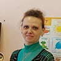

Дошкольное отделение школы № 37
В 2015 году 41% первоклассников Школы № 37 пришли из дошкольного отделения.
- улица Столетова, 13
- Мичуринский проспект, 22к2
- Мичуринский проспект, 10
Воспитатели
Воспитатели, которых чаще всего благодарят родители (отзывы и профили сотрудников взяты с официального сайта школы):|
Воспитатель
Кеньк Людмила Олеговна
6 благодарностей |
Физ. рук.
Горпенко Елена Дмитриевна
4 благодарности |
Катасонова Нина Андреевна
3 благодарности |
Воспитатель
Скутарлеева Екатерина Николаевна
3 благодарности |
|
Воспитатель
Вестфальская Ольга Викторовна
3 благодарности |
Дроздова Ольга Анатольевна
2 благодарности |
Воспитатель
Чернораева Ирина Викторовна
2 благодарности |
Логопед
Мырова Елена Сергеевна
2 благодарности |
|
Воспитатель
Налимова Марина Дмитриевна
2 благодарности |
Воспитатель
Самсоненко Жанна Владимировна
2 благодарности |
 Воспитатель
Никифорова Наталья Ивановна
Воспитатель
Никифорова Наталья Ивановна
1 благодарность |
 Воспитатель
Карелина Екатерина Юрьевна
Воспитатель
Карелина Екатерина Юрьевна
1 благодарность |
|
Воспитатель
Лисовая Татьяна Ивановна
1 благодарность |
Психолог
Майорова Ирина Александровна
1 благодарность |

Помощник воспитателя
Костечко Людмила Николаевна
1 благодарность |
Воспитатель
Кашмова Марина Вячеславовна
1 благодарность |
Отзывы
Данные собраны c официального сайта школы и через форму для отзывов.
От всей души выражаю огромную благодарность инструктору по физкультуре Горпенко Елене Дмитриевне за блестящую подготовку наших деток к Межрайонной олимпиаде по физической культуре "Я готов учиться в школе", где наши ребята заняли 4-е место!!! Очень приятно, что с нашими детками, занимается профессионал и Педагог с большой буквы. Огромное Вам спасибо Елена Дмитриевна и новых спортивных побед!
Очень хочется поблагодарить нашего замечательного музыкального руководителя Хоменко Любовь Георгиевну. Она поставила с детьми танец "Кадриль", с которым детки выступали в школе на IX Межрегиональном Слёте Патриотических Клубов. Выступление наших ребят очень понравилось всем, и зрители их очень поддерживали. А какие замечательные утренники Любовь Георгиевна подготовила к празднику 8-е Марта. Очень понравились в 11-й группе номер "Стиляги", а в 4-й группе номер "Матрёшки". Большое Спасибо Вам Любовь Георгиевна и всех благ!
Безграничное спасибо и низкий поклон нашим воспитателям Ольге Викторовне, Людмиле Олеговне, Елене Васильевне, Нине Андреевне, Ольге Анатольевне, Екатерине Николаевне и нашим незаменимым Светлане Львовне и Лидии Михайловне за высокий профессионализм, любовь, заботу и трепетное отношение к нашим детям!
Очень хочется поблагодарить нашего замечательного музыкального руководителя Хоменко Любовь Георгиевну. Она поставила с детьми танец "Кадриль", с которым детки выступали в школе на IX Межрегиональном Слёте Патриотических Клубов. Выступление наших ребят очень понравилось всем, и зрители их очень поддерживали. А какие замечательные утренники Любовь Георгиевна подготовила к празднику 8-е Марта. Очень понравились в 11-й группе номер "Стиляги", а в 4-й группе номер "Матрёшки". Большое Спасибо Вам Любовь Георгиевна и всех благ!
Безграничное спасибо и низкий поклон нашим воспитателям Ольге Викторовне, Людмиле Олеговне, Елене Васильевне, Нине Андреевне, Ольге Анатольевне, Екатерине Николаевне и нашим незаменимым Светлане Львовне и Лидии Михайловне за высокий профессионализм, любовь, заботу и трепетное отношение к нашим детям!
Здравствуйте.
Хотелось бы поблагодарить весь педагогический коллектив дошкольного отделения номер 1 за внимание к нашим детям, за доброе отношение и заботу, особенно воспитателей группы #7 Ирину Викторовну, Жанну Владимировну, Марину Дмитриевну, и нашу любимую Любовь Григорьевну! Спасибо!!!
Хотелось бы поблагодарить весь педагогический коллектив дошкольного отделения номер 1 за внимание к нашим детям, за доброе отношение и заботу, особенно воспитателей группы #7 Ирину Викторовну, Жанну Владимировну, Марину Дмитриевну, и нашу любимую Любовь Григорьевну! Спасибо!!!
Добрый день! Хочу выразить благодарность нашим воспитателям Екатерине Юрьевне, Татьяне Ивановне,Марине Вячеславовне, Екатерине Михайловне, а также музыкальному руководителю Хоменко Любовь Георгиевне,логопеду Мыровой Елене Сергеевне, Майоровой Ирине Александровне, Зубайдулиной Юлии Александровне за их ежедневный труд, за любовь к нашим детям, за профессионализм! Желаю Вам здоровья, терпения, неистощимой выдумки, добра, всего самого светлого в Вашей жизни! Пусть дни Ваши наполнятся таким же светом, каким Вы одариваете ежедневно и ежечасно наших детей! И пусть возблагодарит вас судьба за такой тяжелый и полезный труд, ведь воспитателям мы доверяем самое ценное. Спасибо Вам огромное!
От души хочется поблагодарить воспитателей ГКП (Группы краткосрочного пребывания) за прекрасный новогодний праздник для наших детей. Наталья Ивановна, Людмила Николаевна, Любовь Георгиевна, спасибо Вам огромное!
Вам удается делать так, что детям нравится ходить в детский сад. Каждое утро Вы встречаете детей с неизменной улыбкой и хорошим настроением и в течение дня умеете увлечь детей разнообразными интересными занятиями – чтением, рисованием, лепкой, танцами и так далее. Мы передаем Вам детей с легким сердцем, потому что Вы дарите им заботу и ласку.
От всего сердца благодарим Вас за профессионализм и умелый подход к работе! Но одного этого было бы недостаточно для того, чтобы наши дети ходили в детский садик с удовольствием. Вы даете им гораздо большее – заботу, внимание, уважение и любовь. Огромное спасибо Вам за это!
От души желаем крепкого здоровья Вам и близким, только положительных эмоций, счастья и любви! И, конечно, успехов и вдохновения в профессиональной деятельности!
Вам удается делать так, что детям нравится ходить в детский сад. Каждое утро Вы встречаете детей с неизменной улыбкой и хорошим настроением и в течение дня умеете увлечь детей разнообразными интересными занятиями – чтением, рисованием, лепкой, танцами и так далее. Мы передаем Вам детей с легким сердцем, потому что Вы дарите им заботу и ласку.
От всего сердца благодарим Вас за профессионализм и умелый подход к работе! Но одного этого было бы недостаточно для того, чтобы наши дети ходили в детский садик с удовольствием. Вы даете им гораздо большее – заботу, внимание, уважение и любовь. Огромное спасибо Вам за это!
От души желаем крепкого здоровья Вам и близким, только положительных эмоций, счастья и любви! И, конечно, успехов и вдохновения в профессиональной деятельности!
Если вы нашли ошибку или неточность, пожалуйста, сообщите нам об этом.
Ученик, выпускник или родитель? Оставьте отзыв о детском саде.